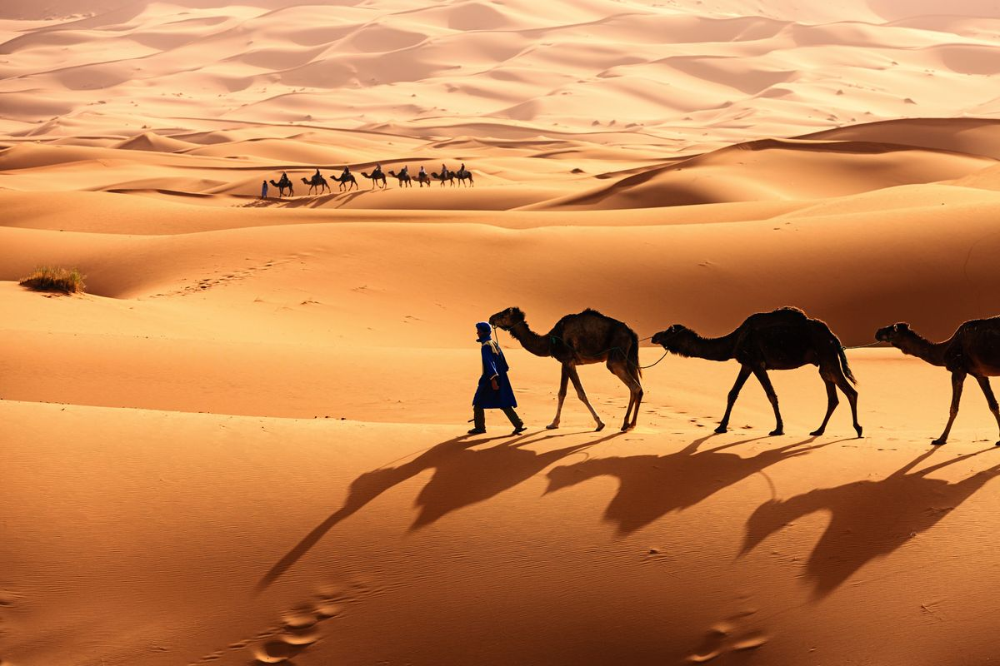

Penjelasan Umum
Bioma gurun merupakan wilayah yang memiliki curah hujan sangat rendah dan kondisi lingkungan yang ekstrem. Gurun dapat ditemukan di Afrika, Asia, Australia, hingga Amerika. Pada siang hari suhu gurun sangat panas, sedangkan malam hari bisa sangat dingin. Gurun memiliki tanah berpasir atau berbatu dengan sedikit tumbuhan. Walaupun terlihat tandus, banyak makhluk hidup mampu beradaptasi di bioma ini.
Ciri-Ciri Bioma
- Curah hujan sangat rendah
- Suhu siang dan malam sangat berbeda
- Tanah berpasir dan kering
- Tumbuhan sedikit dan tahan panas
- Kelembaban udara rendah
Jenis Bioma
- Gurun pasir
- Gurun batu
- Gurun dingin
Flora dan Fauna
Flora gurun meliputi kaktus, semak gurun, dan tumbuhan sukulen. Fauna gurun antara lain unta, ular gurun, kalajengking, rubah fennec, dan kadal gurun.